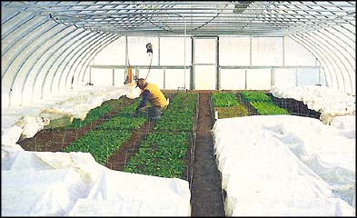

Four-season harvesting has been a boon to home and wallet alike, but most important, says Eliot, is that ""we're having a ball... and the response from our customers is the most gratifying in all my years as a professional grower.""